DeskPi Nano For Jetson Nano
Description
DeskPi Nano is a DeskPin style aluminum alloy shell kit. It is a customized shell for Jetson Nano B01 version. It also provides a GPIO expansion board and a TF card expansion board. In addition to protecting the Jetson Nano motherboard, the appearance is also very good. Pretty.
NOTE: Jetson Nano dose not include in the package and it only fit for Jetson Nano B01 Version.
Purchase

Features
- Only for Jetson Nano B01 Version
- Ultra-thin PWM fan radiator
- Fixable TF Card Adapter Board
- GPIO Adapter Board
Gallery
- Product Outlook
Frontal face
 Back face
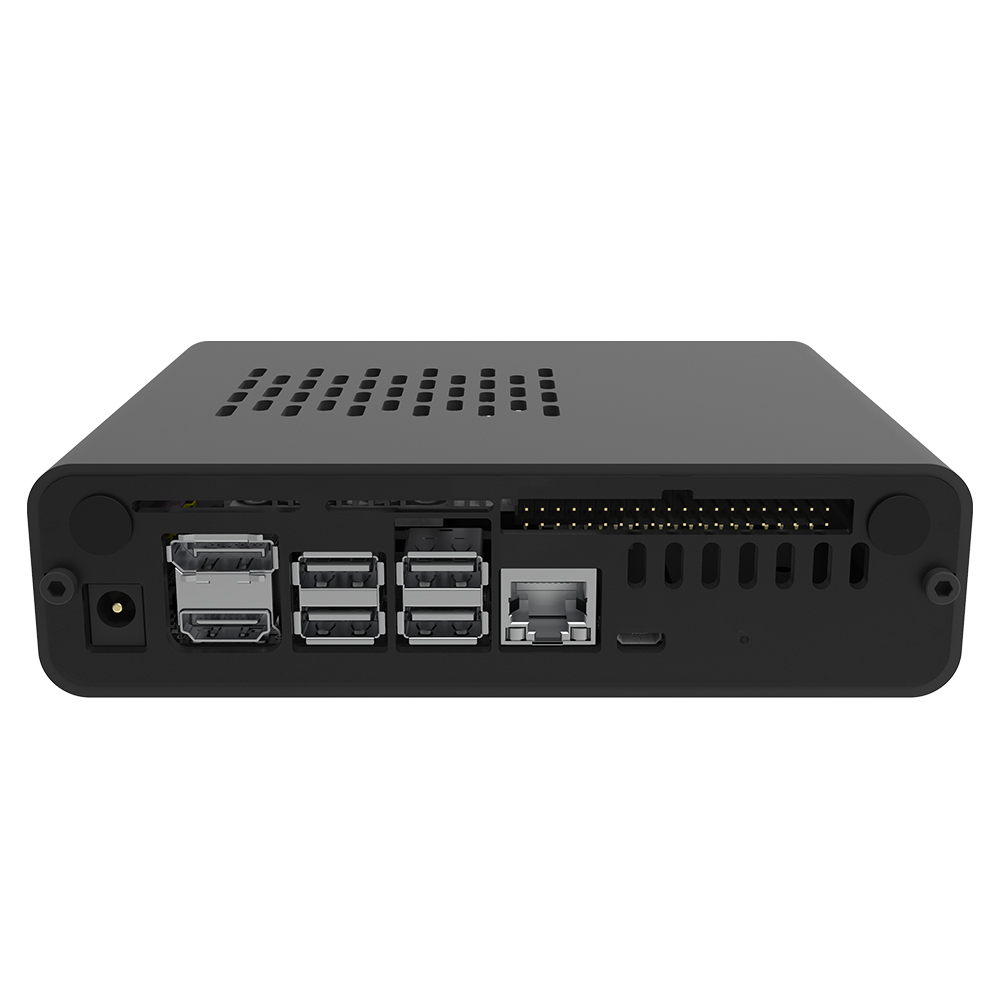
Top side
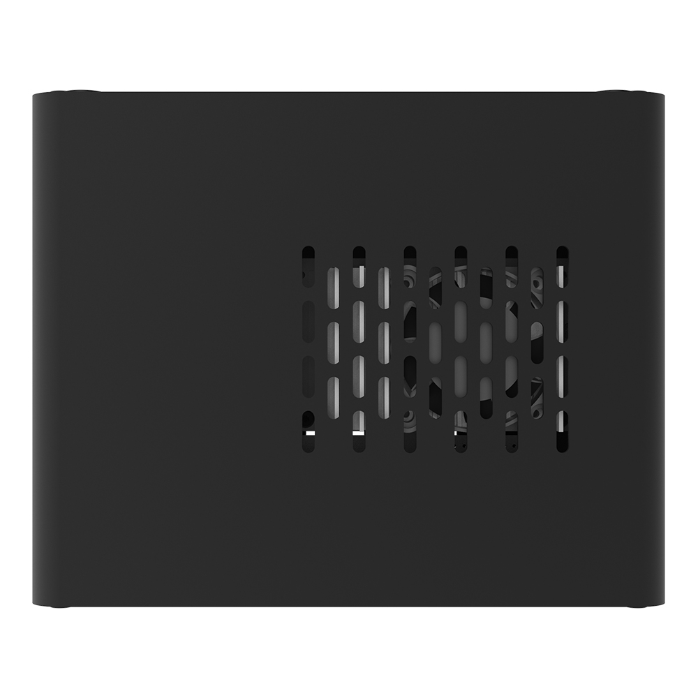
Power button and TF card slot
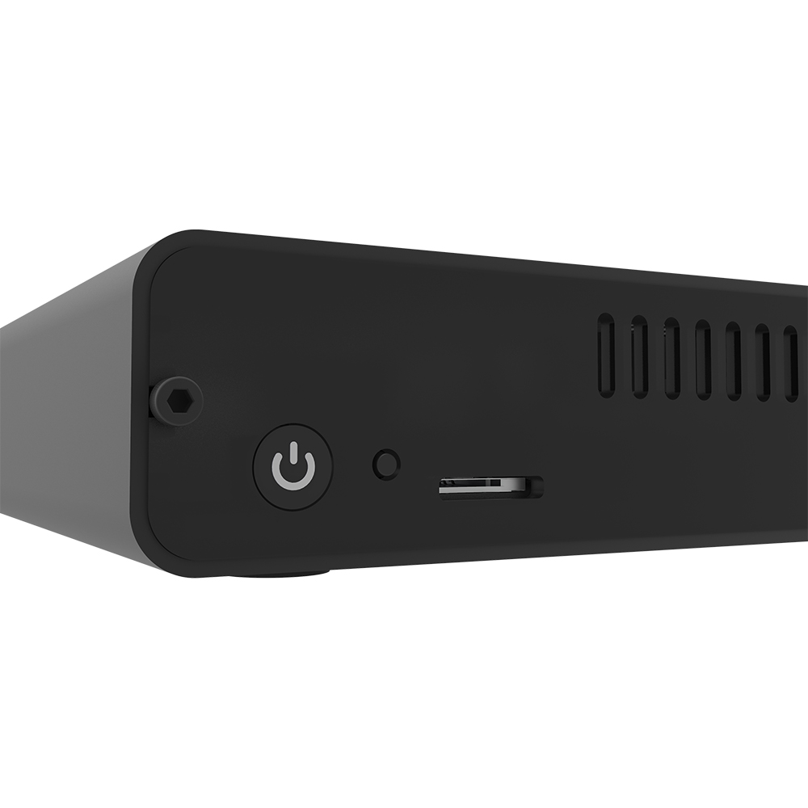
45 degree angle view
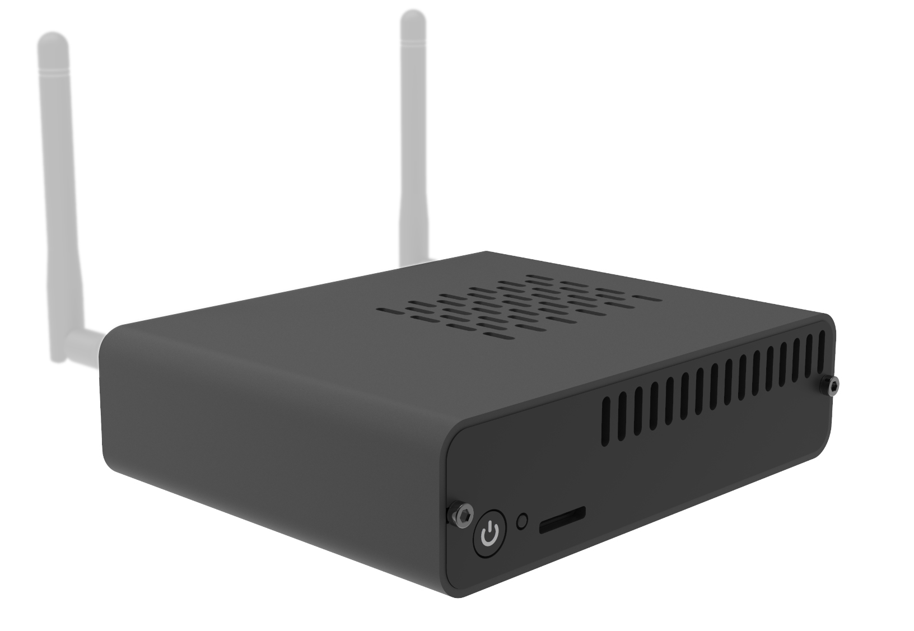
Back face
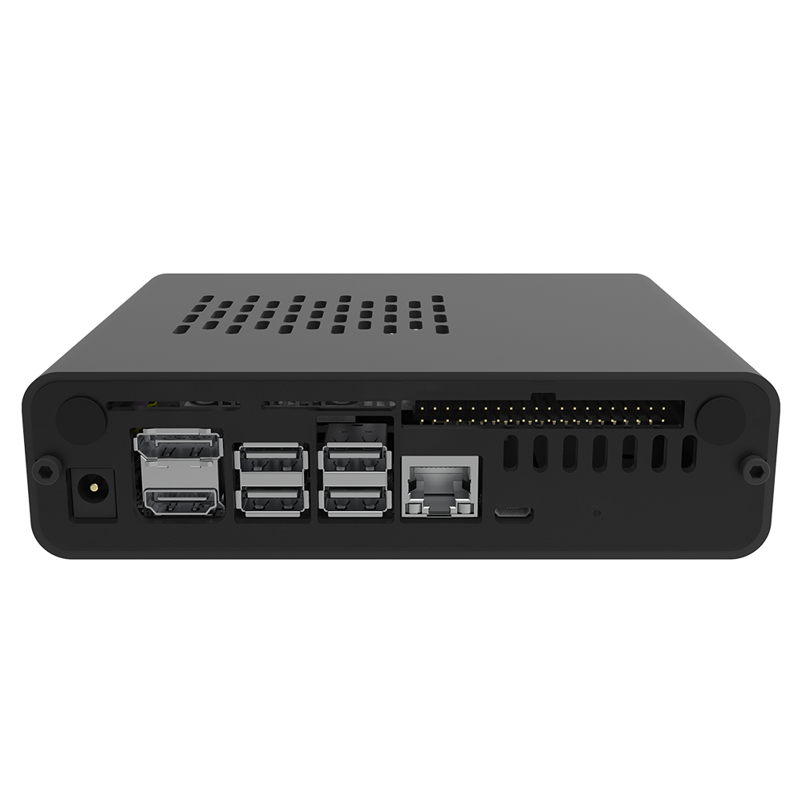
Top side
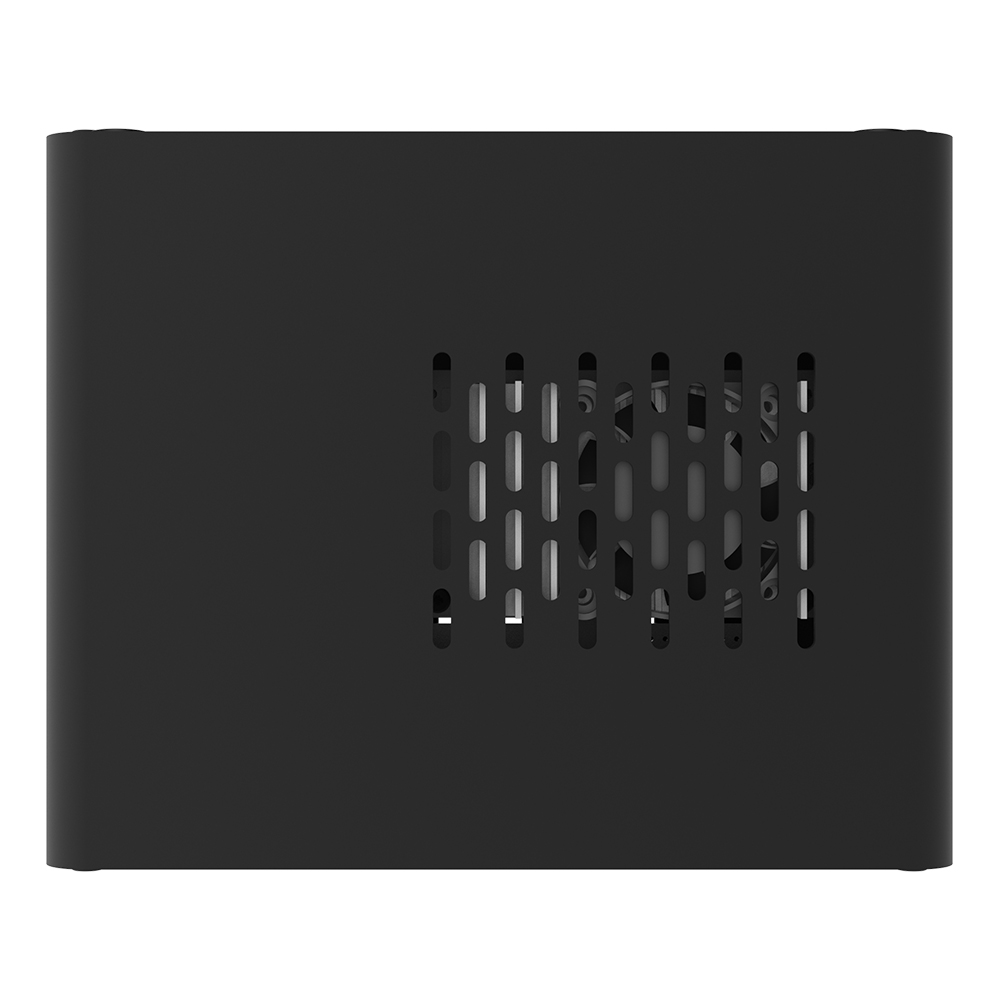
Power button and TF card slot
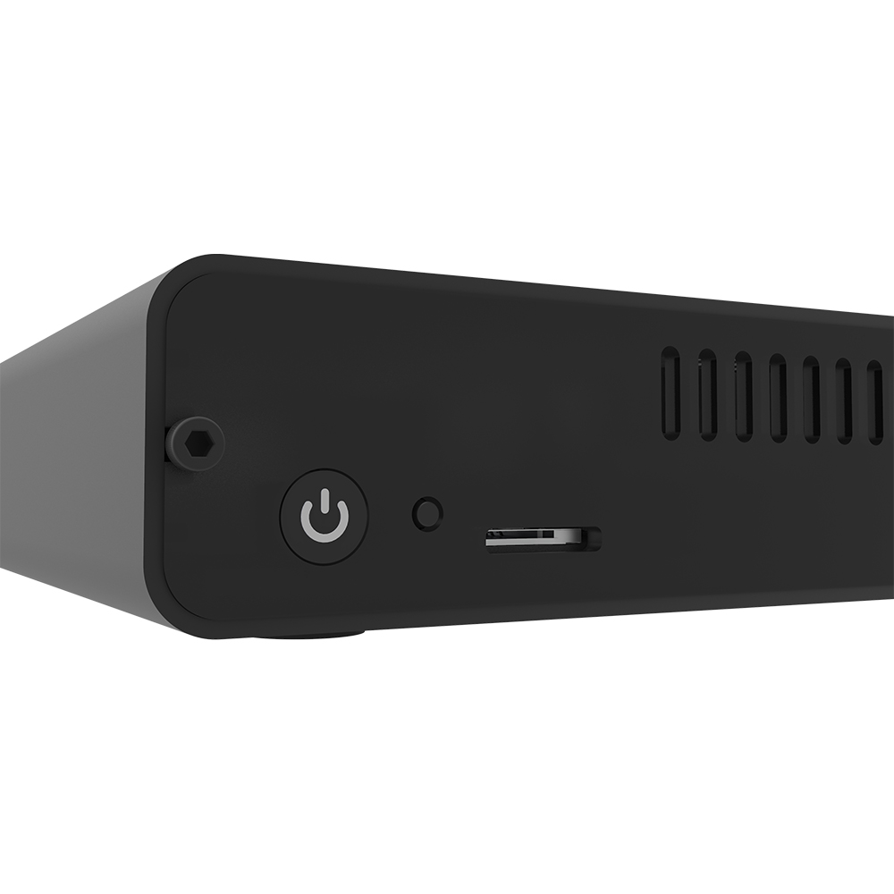
45 degree angle view
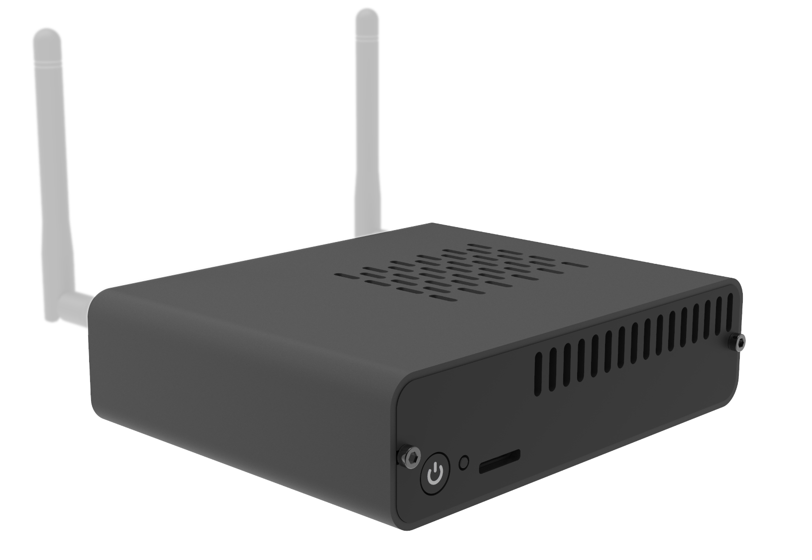
Fan Details
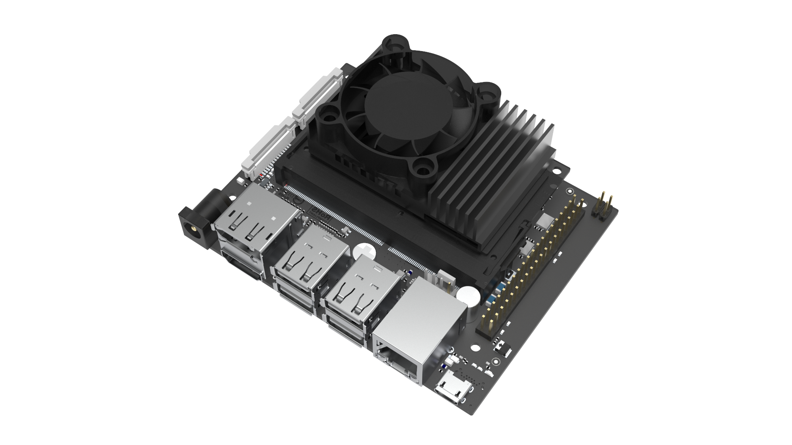
Dimention
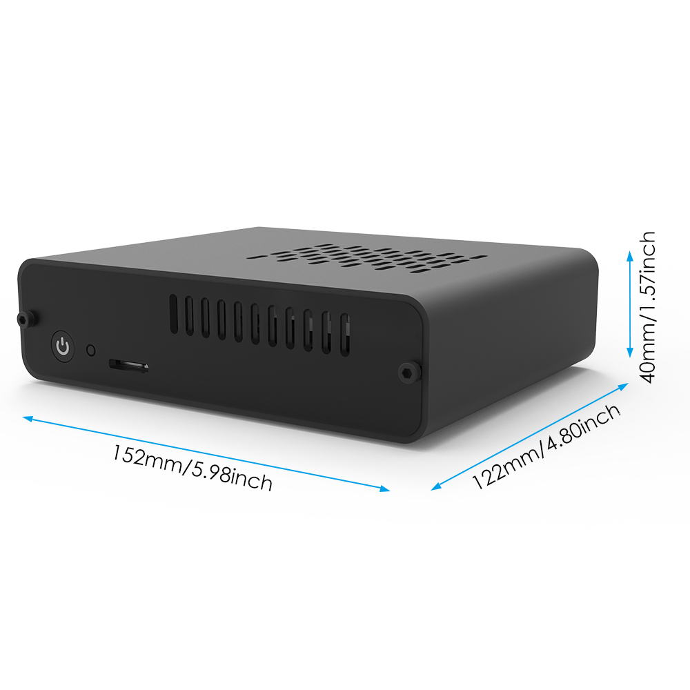
Heat Dissipation effect
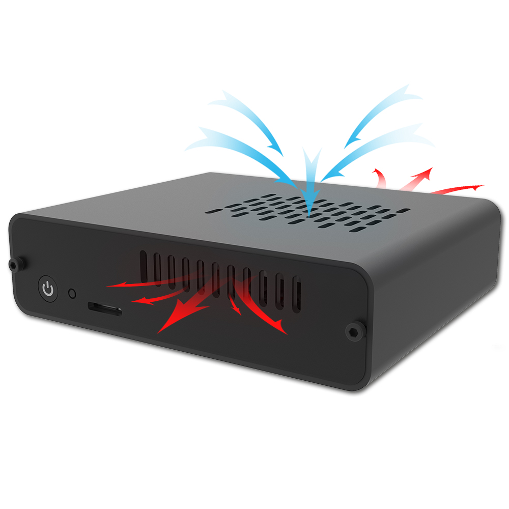
How to enable PWM Fan
Turn on DeskPi Nano and open a terminal, typing following command:
It will enable fan control via system detection and sending PWM signal to the fan. you will see the fan is spinning.Package Includes
- 1 x DeskPi Nano Case (Pack)
How to assemble it
Keywords
- DeskPi Nano, Jetson Nano case, DeskPi